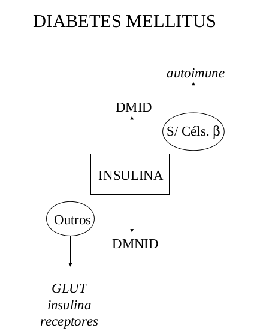

Diabetes
Introdução
O diabetes mellitus constitui em uma deficiência no aproveitamento de glicose pelo indivíduo. Como a glicose é a principal fonte de energia para a manutenção de todas as células do corpo humano, o diabetes causa uma infinidade de transtornos metabólicos, já que, não havendo glicose, o organismo tem de utilizar outras fontes de energia, tais como gorduras, aminoácidos e outros tipos de açúcares, produzindo substâncias em teores não usuais, e aumentando a quantidade de glicose no sangue e tecidos. Os sinais característicos do diabetes são mnemonicamente lembrados pela sigla PPP, que quer dizer, poliúria (muita urina), polifagia (muita fome) e polidispsia (muita sede).
Isso ocorre porque o organismo não consegue guardar a glicose, excretando-a na urina. Como a glicose é um carboidrato, e todo carboidrato se liga na água, o indivíduo faz muito xixi e, perdendo água, tem muita sede. O não aproveitamento da glicose faz também com que o indivíduo tenha muita fome, a fim de repor a energia sob uma forma diferente daquela suprida pela glicose. Como existem diversas causas do diabetes mellitus, os cientistas tiveram de classificá-lo para uma melhor compreensão. Assim, existe o diabetes mellitus tipo I, onde o indivíduo não produz o hormônio necessário para colocar a glicose pra dentro da célula, a insulina, e o diabetes mellitus tipo II, onde o problema não é a produção de insulina, mas qualquer outra coisa que impeça sua captação ou efeito.
Apesar do diabetes mellitus estar associado com a imagem de alguém injetando insulina no próprio corpo, apenas 10% da população acometida pela doença o fazem, já que seu organismo nasce sem a capacidade de sintetizar a insulina. A grande maioria dos pacientes com diabetes mellitus têm a insulina, só que não conseguem aproveitá-la. Isto ocorre porque pode haver uma deficiência na sua absorção pelas células, uma deficiência em seu receptor celular, um problema nas proteínas transportadoras de glicose para dentro da célula (GLUT-4), ou doenças associadas ao pâncreas (orgão produtor da insulina), como infecções severas, pancreatite, traumas, alcoolismo ou uso de fármacos. Seja como for, em ambos os casos do diabetes mellitus, tipo I ou tipo II, a glicose não entra pra dentro da célula, não podendo ser metabolizada para gerar energia (ATP). Nesse caso, ocorrem complicações variadas.
O acúmulo de glicose (e também de frutose e galactose) dentro da célula faz com que água seja puxada pra o seu interior, levando a um edema do tecido, causa principal da catarata, de neuropatias, de nefropatias (rins) e de problemas vasculares, como derrames e gangrenas. Além disso, como a glicose não é utilizada, o organismo passa a fazer uso de gorduras para produzir energia. Acontece que a degradação de gorduras aumenta muito a produção de uns ácidos orgânicos chamados de corpos cetônicos. Como são ácidos, abaixam o pH dos tecidos até um ponto onde as proteínas e enzimas não conseguem mais trabalhar, o que pode resultar no óbito do paciente diabético.
Detalhes
O termo “diabete” é definido como uma condição clínica indicada pela eliminação anormal de urina (poliúria), mas é usualmente utilizado para designar a hiperglicemia, ou aumento da concentração de glicose no sangue (diabetes mellitus). O diabete, dependendo de sua origem, pode ser classificado como insípido, renal, gestacional ou melito. O diabete insípido se dá por uma deficiência no ADH, hormônio anti-diurético. Neste caso, ocorre uma diminuição na reabsorção de água nos túbulos coletores renais, alterando a concentração da urina (baixa densidade). O diabete insípido constitui uma síndrome caracterizada pela emissão de um grande volume de urina (poliúria).
Não obstante, os níveis glicêmicos permanecem normais (urina e sangue). O diabete renal, por sua vez, caracteriza-se por um defeito nos túbulos renais na reabsorção da glicose (hereditário ou adquirido), com consequente glicosúria. O diabete gestacional ocorre quando há baixa tolerência à glicose durante a gravidez. Atinge de 1 a 3% de mulheres grávidas, das quais 30% poderão vir a estabelecer o diabete melito nos anos subsequentes ao parto. O diabete melito constitui uma síndrome originada na ausência ou ineficiência de insulina, e caracterizada pelo aumento do teor glicêmico sanguíneo (valor de referência: 90mg/dl), acompanhado de sinais clínicos característicos (poliúria, polidispsia, polifagia - o trinômio PPP, e perda de peso). Como progresso da doença, os pacientes podem vir a desenvolver cetoacidose, catarata e complicações microvasculares (neuropatia, nefropatia, aterosclerose e doença coronariana).
O DM possui prevalência estimada em 2,5% da população mundial (mais de 150 milhões de pessoas em todo o mundo), com 1-2% na população do mundo ocidental, 15 milhões de norte-americanos (5% da população), e 10 milhões de brasileiros (7% da população). Os diabéticos apresentam uma morbidade elevada (3a. causa de morte nos EUA), pontuada por perda da visão, insuficiência renal em estágio terminal, amputação de membros inferiores, infarto do miocárdio e acidente vascular cerebras, AVC.
O diabete melito constitui uma síndrome de múltiplas etiologias, patogêneses e formas de herança. Neste sentido, é classificado atualmente em 4 grupos: DM tipo I (antigo DMID, diabete melito insulino-dependente, causado por uma destruição primária das células \(\beta\)), DM tipo II (antigo DMII, diabete melito insulino-independente, causado por resistência à insulina associada a defeitos em sua secreção), DM gestacional (redução de tolerância à glicose), e outros tipos específicos. Estes últimos podem ser defeitos genéticos na função da célula \(\beta\) (DNA mitocondrial, glicoquinase), na ação insulínica (resistência tipo A, diabetes lipoatrófico), doenças do pâncreas (traumas, pancreatite, neoplasias, alcoolismo crônico), endocrinopatias, DM induzida por drogas (glicocorticóides e contraceptivos orais, infecções (rubéola, citomegalovírus), e síndromes associadas (Down, porfiria, Huntigton).

Essa classificação é admitida pelo ADA, American Diabetes Association, desde 1997. Estágios intermediários de condições clínicas evidenciam tolerância à glicose alterada e glicemia de jejum alterada. Os tipos mais comuns do DM constituem o tipo I e II. O DM tipo I é a forma predominante em indivíduos abaixo dos 20 anos de idade, representando menos de 10% dos casos de diabetes. Há destruição ou degeneração das células-\(\beta\), levando à deficiência absoluta de insulina. O DM tipo I pode ter causas hereditárias multifatoriais, imunológicas (doenças auto-imunes), ou causas ambientais (infecção viral aguda).
No DM tipo I é comum a presença de anticorpos anti-células de ilhotas (anti-ICA, 85% dos pacientes) e anti-carboxilase do ácido glutâmico, anti-GAD. Os pacientes apresentam o trinômio PPP de poliúria, polifagia e polidispsia, abruptamente. O DM tipo I leva a uma alteração metabólica com exarcebação do catabolismo, na qual a insulina circulante é virtualmente ausente (insulinopenia), o glicagon plasmático está elevado, e as células-\(\beta\) do pâncreas não são capazes de responder a qualquer estímulo insulinogênico. O DM tipo II, por sua vez, constitui a forma mais abrangente do DM (90% dos casos), e resulta da resistência à insulina (alteração ao nível dos receptores insulínicos, ou no transportador GLUT da glicose, por ex) associada a um defeito em sua secreção. Aparece geralmente após os 40 anos de idade, alcançando mais de 10% das pessoas com mais de 75 anos. No DM tipo II os pacientes não são dependentes da insulinoterapia, respondendo os não obesos à terapia dietética e de hipoglicemiantes orais.
O DM tipo II pode também ter correlação com o histórico familiar do paciente (genes diabetogênicos, podendo produzir maturações imperfeitas de pré-pró e de pró-insulina). Os pacientes com DM tipo II costumam apresentar forte obestidade, que leva à deformação de receptores insulínicos. Os fatores de risco do DM tipo II incluem antecedente familiar, obesidade, diabetes gestacional, hipertensão arterial, hipertrigliceridemia, e idade.
As complicações crônicas do DM são de ordem microvascular e macrovascular. As complicações microvasculares incluem retinopatia diabética (microaneurismas em torno do nervo óptico), catarata, neuropatia e nefropatia diabética (microalbuminúria como marcador). A catarata e a neuropatia diabética têm origem no desvio do metabolismo da glicose, frutose e galactose. Estes compostos, em excesso em tecidos insulino-independentes (nervos periféricos, cristalino, fígado, cérebro, rins e hemácias), são convertidos para sorbitol, um poliol mais polar que a glicose, pela aldose redutase. O sorbitol retém água, levando a uma hiperosmose intracelular, com influxo de água, edema e lesão celular.
No cristalino a hiperosmose secundária ao acúmulo de glicose gera edema, opacidade, e finalmente catara. Nas hemácias, o acúmulo de sorbitol desloca o 2,3-DPG, reduzindo a habilidades das mesmas em carregar o oxigênio. A degradação do sorbitol se dá através da sorbitol desidrogenase, que o converte, por exemplo, em frutose. Esta enzima é deficiente em tecidos insulino-independentes. A ligação de glicose em proteínas sanguíneas também colabora para as disfunções microvasculares. A dosagem de proteínas glicadas é utilizada no monitoramento do controle da glicose a longo prazo em indivíduos portadores de DM, embora o exame de rotina não possua valor diagnóstico para o DM.
Em pacientes diabéticos, ocorre um aumento da fração de hemoglobina Hb A1c (existem 3 tipos Hb A, 1a, 1b, e 1c), devido à ligação irreversível de glicose a um resíduo de valina da cadeia \(\beta\) da hemoglobina (glicação inferior a 20% do total). As complicações macrovasculares do DM incluem a aterosclerose (por espessamento da membrana basal do endotélio de grandes artérias), infarto do miocárdio, derrames, gangrena periférica, doença vascular periférica e neuropatia periférica. Metabolicamente o DM também envolve uma redução na atividade da glicoquinase hepática (fosforilação da glicose), aumento na atividade da glicose-6-fosfatase (defosforilação da glicose), aumento no catabolismo protéico (e consequente aumento da perda de nitrogênio protéico pela urina), e aumento no catabolismo lipídico. Este último leva à produção excessiva de corpos cetônicos (acetoacetato, acetona e hidroxibutirato) que, se não forem corrigidos, tornam-se graves e levam à cetoacidose, com complicações como o distúrbio eletrolítico, coma e morte, causados progressivamente pela redução do pH extracelular.
O aumento da formação de corpos cetônicos pode levar a cetonemia, passando secundariamente para cetonúria, cetose, acidose metabólica, coma e morte. O coma ocorre devido a alterações eletrolíticas, desidratação celular, redução da circulação cerebral (hipóxia), e por distúrbios dos processos metabólicos devido à acidose. O metabolismo de lipoproteínas plasmáticas também está alterado no DM. No DM tipo I ocorre hipertrigliceridemia, em consequência da diminuição da atividade da lipase lipoprotéica, aumento do fluxo de ácidos graxos, e aumento da síntese hepática de triglicérides. O tratamento do diabetes mellitus depende de sua classificação. No DM tipo II, a terapia é dada através do controle dietético e redução de peso, afim de se corrigir a hiperglicemia. Agentes hipoglicemiantes como as sulfoniluréias ou a insulinoterapia podem ser requeridas. No DM tipo 2 a insulinoterapia é a base do tratamento.
Pode ser administrada na forma padrão (o bem-estar clínico do paciente torna-se o objetivo central), com resultados em torno de 250mg/dl de glicemia e 8% de Hb glicada, ou na forma intensiva (visa normalizar a glicemia com administração mais frequente de insulina), através de bomba de insulina de infusão contínua, com resultados em torno de 110mg/dl de glicemia e 6% de Hb glicada. O tratamento intensivo pode resultar em um aumento de três vezes na frequência de hipoglicemia. Muitos clínicos, entretanto, acreditam que o risco aumentado de hipoglicemia que acompanha a terapia intensiva se ajusta pela redução substancial na incidência de complicações a longo prazo, como a retinopatia e nefropatia diabéticas.
Síntese
- Diabetes melito; síndrome caracterizada por ausência (DMID, auto-imunidade de células \(\beta\) do das ilhotas do pâncreas, com sintomas de poliúria, polifagia, polidipsia, hipertrigliceridemia, hiperglicemia e cetoacidose), ou ineficiência de insulina (DMII, células \(\beta\) disfuncionais, resistência à insulina);
- Efeitos crônicos do diabetes (aumento de glicose): catarata (aumento do sorbitol metabolizado da glicose), e disfunção microvascular (ligação de glicose com proteínas plasmáticas); consequências tardias: cegueira, amputação de membros, derrame, infarto, insuficiência renal;